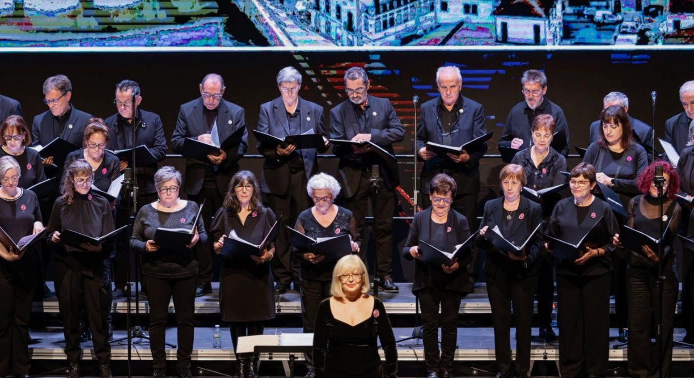

Zamora · San Lázaro · desde 2000
Archivo vivo de una coral zamorana.
Aures Cantibus no se presenta solo como una agenda de conciertos: esta web ordena su historia, su repertorio, su memoria visual y su contacto institucional con una estética de partitura, escenario y patrimonio.
Identidad
Una web más parecida a un programa de concierto que a una plantilla.
La portada se construye como una pieza editorial: origen, próxima cita, repertorio, archivo visual y contacto. La idea es que cualquier persona que entre desde Facebook entienda rápido quiénes son, qué hacen y cómo puede escucharles, contratarles o cantar con ellos.
Oculi pictura tenetur, aures cantibusLos ojos son cautivados por la pintura, los oídos por el canto.
Aures Cantibus
Coral de voces mixtas ubicada en Zamora, nacida a comienzos del año 2000 en el entorno del barrio de San Lázaro y abierta a un repertorio amplio: música sacra, villancicos, canción popular, música antigua y grandes obras corales.
- Ciudad
- Zamora
- Coro
- Voces mixtas
- Archivo
- Agenda + galerías + repertorio
Agenda
Toda la agendaLa próxima actuación como cartel principal.
La agenda ya no es una lista enorme: la portada destaca una cita, la página de agenda la ordena en tarjetas compactas y añade calendario de disponibilidad.
Calendario próximo
Ver calendarioFechas visibles, sin llenar la pantalla.
El sonido de Aures
Familias musicales con intención, no una tabla sin alma.
El repertorio se organiza como mapa musical: sacro, renacentista, popular zamorano, Navidad, grandes obras y autores vinculados a Zamora.
Música sacra
Motetes, misas breves, Ave María, Panis Angelicus y repertorio litúrgico.
Renacimiento
Cancioneros, polifonía antigua y obras de Juan del Encina, Guerrero o Victoria.
Raíz zamorana
Bolero de Algodre, Ronda de Carballeda y autores vinculados al territorio.
Navidad
Villancicos tradicionales, repertorio europeo y música coral de temporada.
Memoria visual
Galerías como archivo cultural.
Cada actuación puede tener página propia: foto principal, fecha, lugar, contexto, grid de imágenes, lightbox y botones de compartir.
Obras destacadas
Seis piezas para entender el repertorio.
Una selección inicial con presencia sacra, popular, navideña, zamorana y de gran obra coral. La lista completa mantiene buscador y filtros.
Explorar repertorioContacto institucional
Contratación, encuentros y nuevas voces.
La web diferencia claramente tres vías: contratar una actuación, proponer un encuentro coral o pedir información para cantar con Aures Cantibus.